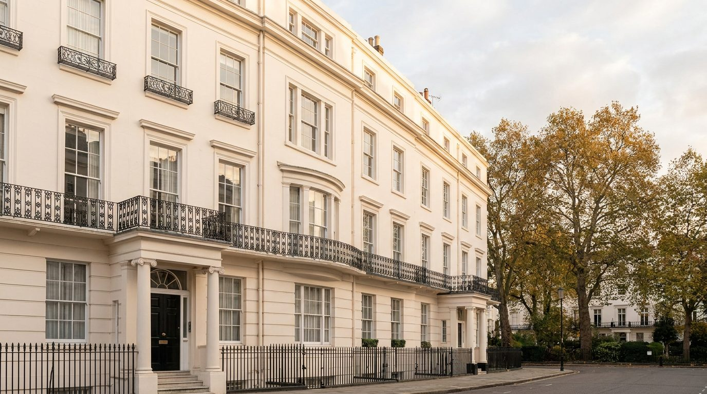
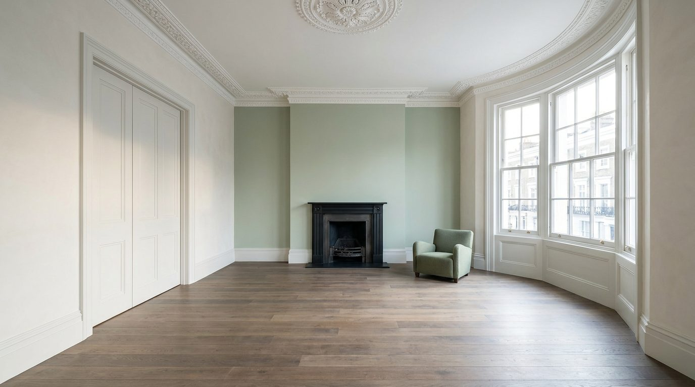

Atlante · INT-GB-01 · Regno Unito · Europa
Townhouse georgiana a Belgravia, stucchi bianchi e bow window sul garden square
Esempi · esterno e interno


Perché funziona
Il cliente britannico compra la townhouse come pedigree: quattro livelli, una facciata in stucco del 1830-1847 e un garden square privato sono credenziali, non decorazione. Al catalogo serve perché è l'opposto esatto dell'appartamento parigino già in atlante: là il lusso è oro e boiserie scolpita, qui è proporzione, bianco e silenzio, e il prodotto si misura su una quinta neutra che non lo aggredisce. Il made in Italy entra per contrasto materico: lana, cuoio, pietra, ottone brunito su un fondo di gesso. Non deve diventare la casa vittoriana da serie tv: niente carte da parati a fiori, niente chintz, niente cura british stiracchiata. Poche cornici giuste, un solo colore.
Architettura · elementi riproducibili
- soffitto del piano nobile 3200 mm, cornice a gola 250 mm e rosetta centrale in gesso
- bow window curva a cinque facce, luce totale 2400 mm, davanzale 900 mm, altezza 2600 mm
- finestre a ghigliottina a sei riquadri, 1200 x 2100 mm, telaio in legno 60 mm
- parquet a doghe in rovere 180 x 2000 mm, posa dritta verso la finestra
- camino in marmo 1400 mm con inserto in ghisa e specchio sopra 1100 x 1500 mm
- porta a due battenti 2400 mm con pannelli a cornice, maniglie in ottone brunito
- una poltrona bassa in lana color salvia e un tavolino in legno: nessun altro arredo
Fatto verificato: il georgiano è marcato da simmetria e proporzione di matrice classica; in Gran Bretagna si usa quasi sempre mattone o pietra, e il mattone è spesso mascherato con intonaco, mentre in città si affermano file di case a schiera identiche, anche per i ricchi, con una piazza-giardino davanti.
Fatto verificato: le grandi terrazze in stucco di Belgravia furono costruite tra il 1830 e il 1847 per Richard Grosvenor, secondo marchese di Westminster, sotto la direzione di Thomas Cubitt, intorno a Belgrave Square e Eaton Square.
Fatto verificato: il bow window è una bay window curva che combina quattro o più facce, a differenza della bay a tre lati, e compare nel Regno Unito nel Settecento.
Valutazione: il registro quiet sta nella scala e nel bianco, non nella povertà di dettaglio; un solo campo salvia, nessun tessuto a fiori, nessun ottone lucido, altrimenti la casa scivola nel set televisivo in costume.
Luce
Prompt di generazione (EN)
Interior photograph of a first-floor drawing room in a Georgian Belgravia townhouse, 3.2 m ceiling with a 250 mm plaster cornice and centre rose, walls in warm chalk white plaster with one pale sage wall as a single colour field, 180 mm smoked oak floorboards oiled matte, a curved five-facet bow window 2400 mm wide with 2600 mm high six-over-six sash windows, black cast-iron fireplace 1400 mm, 2400 mm double doors. One low sage wool armchair is the only furniture. Single key light through the bow window on camera right, low sun at 12 degrees, 5600 K, soft even shadows, no lamps, neutral white balance. 28 mm lens at 1.35 m, two-point perspective, verticals parallel, clean cool grade, no people, no text, no logos.